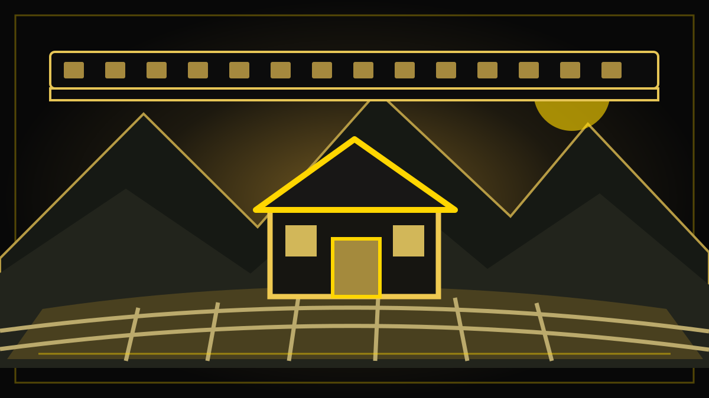

REDAKSJONELT UTKAST – IKKE PUBLISERT
Film og litteratur · Nyheter og bakgrunn · 30. oktober 2026
«Markens grøde» på kino – og på europeisk priskortliste
Hans Petter Molands filmatisering har kinopremiere 30. oktober, står på kortlisten til European Film Awards og er Norges Oscar-kandidat. Samtidig følger en vanskelig del av litteraturhistorien med Hamsuns navn.

Den gamle fortellingen får nye ansikter
Fredag 30. oktober går Markens grøde opp på norske kinoer. Hans Petter Moland har filmatisert Knut Hamsuns roman fra 1917, med Herbert Nordrum og Asta Kamma August i hovedrollene som Isak og Inger Sellanraa. Filmen varer 149 minutter, ifølge Norsk filminstitutt, og er et drama om to mennesker som forsøker å bygge et liv i krevende natur.
Handlingen tar utgangspunkt i Isak, som strever alene i villmarken. Når Inger kommer inn i livet hans, begynner de å bygge opp gården Sellanraa. Arbeid, kjærlighet og landskap binder dem sammen, men fortellingen rommer også en hemmelighet som setter forholdet under press.
Det er filmens offisielle premiss. Hvordan skuespillerne og regissøren faktisk løser oppgaven på lerretet, er et eget spørsmål som først kan besvares i en anmeldelse.
Fra Sognefjorden til det store lerretet
Innspillingen fant sted i Sognefjordområdet, blant annet på den fredede fjellgården Ormeli i Luster, opplyser Bergen internasjonale filmfestival (BIFF). Naturen er dermed ikke bare en bakgrunn som er lagt inn digitalt; stedet har vært en konkret del av produksjonen.
Manuset er skrevet av Hans Petter Moland og Gard B. Eidsvold. På rollelisten står også Gard B. Eidsvold, Anders Baasmo og Sjur Vatne Brean. Produksjonen er knyttet til selskapet 4 1/2 Fiction, med Håkon Øverås som produsent.
Filmen hadde internasjonal festivalvisning i Toronto i september og åpnet BIFF i Bergen 14. oktober, før den ordinære kinopremieren 30. oktober. Det er altså ikke slik at publikum først møter filmen denne fredagen; det er den brede kinolanseringen som er ny.
Kan en roman fra 1917 fortsatt oppleves nær?
Markens grøde handler om mennesker som forsøker å skape noe varig gjennom arbeid og tilknytning til et sted. Bokens forhold til natur, jordbruk, endring og modernitet gjør den fortsatt til et interessant utgangspunkt for samtaler om samfunn, selv om leserne kan trekke helt forskjellige konklusjoner.
En filmatisering er heller ikke nødt til å kopiere romanen scene for scene. Filmskaperne må velge hvilke konflikter og personer som skal stå i sentrum, hvor mye av fortellingen som skal med, og hvordan bilde, lyd og tempo skal formidle det som i romanen finnes som språk.
Norsk filminstitutt beskriver prosjektet som en film der forholdet mellom Isak og Inger står sentralt. Det gir et tydelig menneskelig utgangspunkt, også for dem som aldri har lest Hamsun.
Forfatterens historie lar seg ikke viske bort
Det er likevel vanskelig å skrive om Knut Hamsun uten også å nevne hans politiske etterlatenskaper. Hamsun støttet det nazistiske Tyskland og den tyske okkupasjonen av Norge. Dette er dokumentert i Store norske leksikons fagartikkel om forfatteren og har preget diskusjonen om ham i etterkrigstiden.
At forfatteren var en betydelig kunstner og samtidig hadde alvorlige politiske standpunkter, er ikke to opplysninger som opphever hverandre. Litteraturhistorien rommer begge. Man kan både diskutere verkets estetiske og historiske betydning og undersøke hvordan det forholder seg til ideene og samfunnet det ble skrevet i.
Hva Molands film gjør med denne arven, må ikke bestemmes på forhånd av journalistikken. En rettferdig vurdering krever at man ser filmen og undersøker hva den faktisk viser og ikke viser.
På kortliste til europeiske filmpriser
Norsk filminstitutt har opplyst at Markens grøde er en av filmene på kortlisten til European Film Awards 2027. Filmen er også valgt som Norges kandidat i kategorien beste internasjonale film ved Oscar-utdelingen. Det betyr ikke at den allerede er nominert til eller har vunnet noen av prisene: Kortlisten er et tidligere trinn i utvelgelsen, og den norske Oscar-innsendelsen skal vurderes av det amerikanske filmakademiet.
Nominasjonene til European Film Awards offentliggjøres etter planen 14. november 2026, mens prisutdelingen er lagt til Athen 17. januar 2027. Denne internasjonale oppmerksomheten gir den norske kinopremieren en ekstra nyhetsdimensjon, uten at det i seg selv forteller hvordan publikum vil vurdere filmen.
Etter festivalene kommer kinopublikummet
Distributøren Scanbox opplyste tidligere i høst at filmen ble valgt til å åpne BIFF. Både festivalen og distributøren har uttrykt store forventninger til produksjonen. Slike uttalelser er legitime kilder til hva arrangørene mener, men de er ikke en uavhengig vurdering av filmens kvalitet.
Fredagens kinopremiere åpner for en bredere samtale: Hvordan formidler en moderne film et verk som har vært både hyllet og omstridt? Hvor nært kommer vi menneskene i historien? Og hvilket forhold får dagens publikum til et liv som er så annerledes enn deres eget?
Det er spørsmål Paradisavisa kan følge opp med anmeldelse, publikumsreaksjoner og eventuelle intervjuer – etter at filmen er sett.